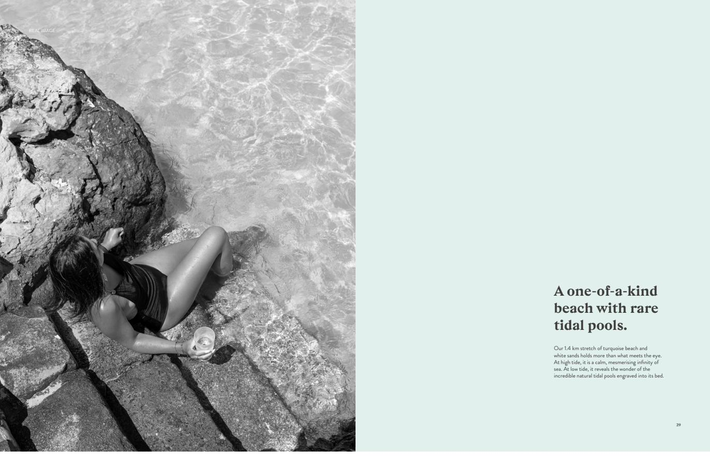
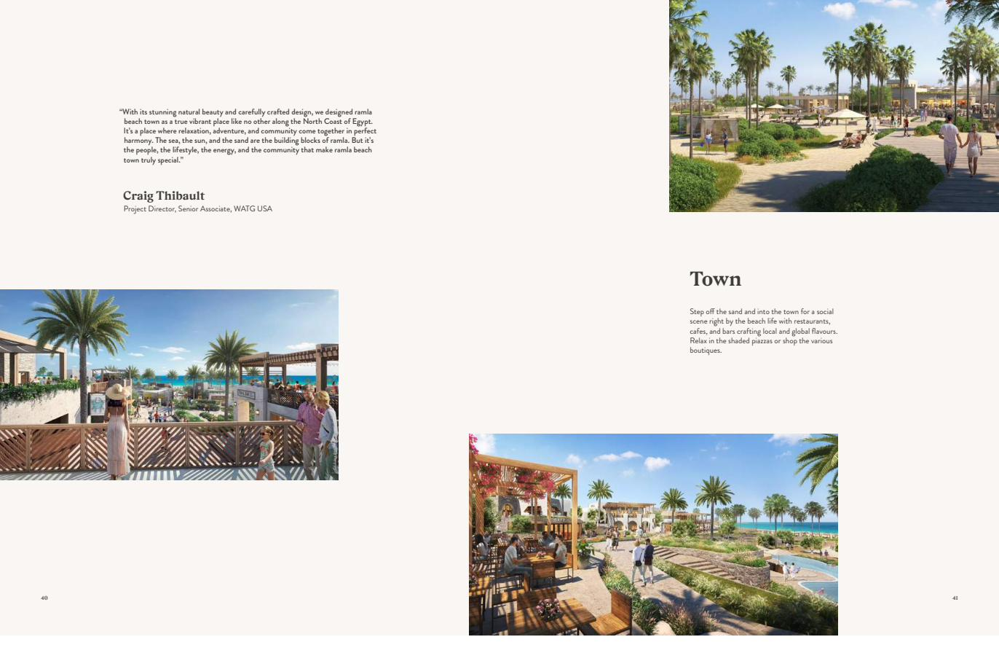
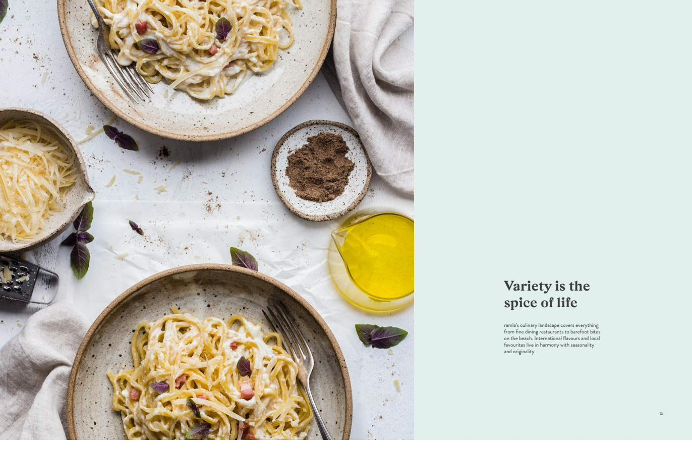
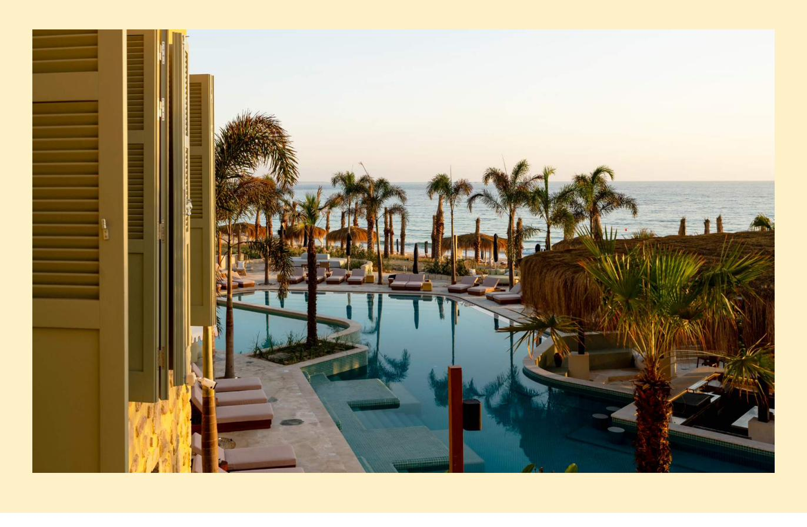
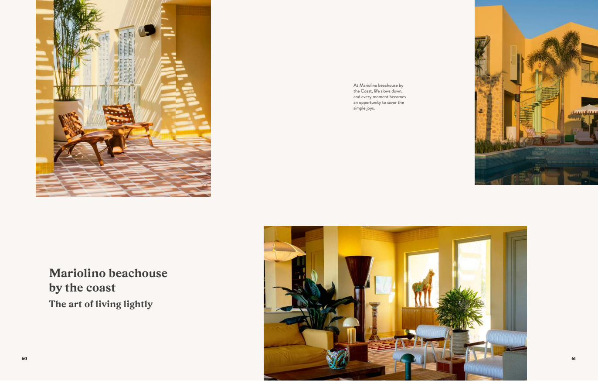
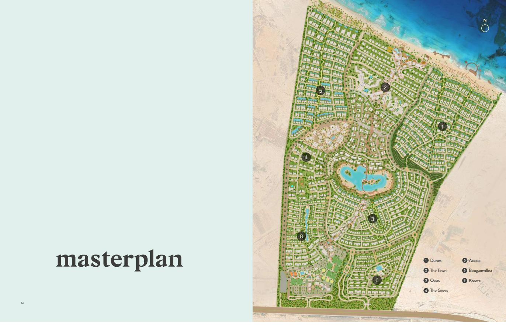

Ramla sits on the shore of Ras El Hekma bay, where the sea is calm and the sand runs white. Six neighbourhoods, a lagoon at the centre, and a beach with rare natural tidal pools that appear when the water draws back. تقع رملة على شاطئ خليج رأس الحكمة، حيث البحر هادئ والرمال بيضاء. ستة أحياء، وبحيرة في القلب، وشاطئ يضم بِرَكاً مدّية طبيعية نادرة تظهر حين ينحسر الماء.

At high tide the bay reads as an unbroken sheet of turquoise. At low tide it reveals tidal pools carved naturally into the seabed — shallow, warm, and safe enough for children to spend the whole morning in. عند ارتفاع المد يبدو الخليج امتداداً متصلاً من اللون الفيروزي. وعند انحساره تنكشف بِرَك مدّية محفورة طبيعياً في قاع البحر — ضحلة ودافئة وآمنة بما يكفي ليقضي فيها الأطفال صباحهم كاملاً.
The North Coast runs roughly 1,050 km along the Mediterranean. Ramla sits at Ras El Hekma, on the stretch known for the calmest water and the finest sand. يمتد الساحل الشمالي نحو ١٠٥٠ كم على البحر المتوسط. وتقع رملة في رأس الحكمة، على الجزء المعروف بأهدأ مياهه وأنعم رماله.

Soft sand paths link the neighbourhoods to the beach, to the town and to each other. No car needed once you arrive. ممرات رملية ناعمة تربط الأحياء بالشاطئ وبالبلدة وببعضها. لا حاجة للسيارة بمجرد وصولك.
Every building is positioned to let the Mediterranean wind move through the neighbourhoods rather than around them. وُضِع كل مبنى ليسمح لنسيم المتوسط بالمرور عبر الأحياء لا حولها.
The architecture reads the region's building traditions and reinterprets them, rather than importing a look from elsewhere. تستلهم العمارة تقاليد البناء في المنطقة وتعيد تفسيرها، بدلاً من استيراد طراز من مكان آخر.
The masterplan works with the site's existing landscape and water rather than levelling it flat first. يتعامل المخطط العام مع طبيعة الموقع ومياهه القائمة بدلاً من تسويتها بالكامل أولاً.
Ramla's town sits right off the sand — restaurants, cafés, bars and boutiques around shaded piazzas. At the centre of the development is a swimmable lagoon. Along the village street, the everyday shops and services you actually need through a summer. تقع بلدة رملة على مقربة من الرمال مباشرةً — مطاعم ومقاهٍ وبارات ومتاجر حول ساحات مظللة. وفي قلب المشروع بحيرة صالحة للسباحة. وعلى امتداد شارع القرية، المتاجر والخدمات اليومية التي تحتاجها فعلاً طوال الصيف.
The sports campus runs top academies through the summer season. يستضيف المجمّع الرياضي أبرز الأكاديميات طوال موسم الصيف.

The Siwa eco-lodge is opening a 71-room nature lodge at Ramla, built the same way — earth construction, no imported gloss. Mariolino beachouse brings Mediterranean and Levantine cooking to the sand. يفتتح نزل سيوة البيئي نُزُلاً طبيعياً من ٧١ غرفة في رملة، مبنياً بالطريقة نفسها — بناء بالطين، دون لمسات مستوردة. ويقدّم Mariolino beachouse المطبخ المتوسطي والشامي على الرمال مباشرةً.



Which neighbourhood suits you, what's released, what the payment plan looks like this month — send a message and I'll come back with real numbers. أي حي يناسبك، وما المطروح حالياً، وكيف تبدو خطة السداد هذا الشهر — أرسل رسالة وسأوافيك بأرقام حقيقية.